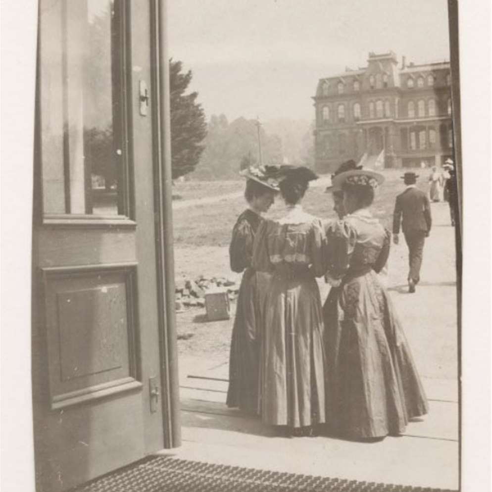

In 1902, the Board of Regents made University Extension an autonomous department under the leadership of the former Cornell history professor Henry Morse Stephens. Stephens was a fervent supporter of the original ideology of university extension’s: “I am longing to try my hand on a greatExtension scheme on the Oxford line - I know I can do it and make a success of it.” In contrast to the initial ‘free lectures’ model of Gayley and his colleagues, Stephens designed and organized lectures to meet the needs and interests of adult professionals across the state. This model was operating largely independently of the Academic Senate, used mainly non-faculty lecturers offering non-credit courses, and was self-funded through a subscription model. With this extremely agile and student-centric model, he created the fundamental concept of Continuing Education as we know it today. The success of this model and his own energy, engagement and popularity, allowed corres Extension to grow exponentially, reaching its peak of 15 centers around the state of California in 1905. However, when Stephens continued his career with other university appointments after 1905, Extension activities declined until they ultimately ceased in 1910.
/>
Women students at east entrance of California Hall, with North Hall in background.
/>
Los Angeles campus. The UCLA campus as it appeared in 1929 when instruction began on the new campus.
/>